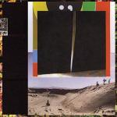
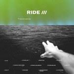
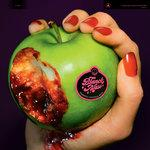
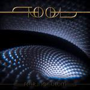

Music Reviews
-

Lower Dens The Competition
On Lower Dens' defiant fourth album, Jana Hunter bares more of himself than ever before over a lush, widescreen new wave sound.
Juan Edgardo Rodríguez reviews... -

Frankie Cosmos Close It Quietly
Over the course of 21 songs in under 40 minutes, Greta Kline and her cohorts throw out a punched up indie-pop lifeline for those that want it.
Mark Moody reviews... -

Bon Iver i,i
Bon Iver's latest album looks for resilience and partnership in a chaotic world, its music the clearest blend of the organic and digital to date.
Joe Marvilli finds the faith among the clatter... -

Ride This is Not a Safe Place
Back with producer Erol Alkan, Ride's second 21st-century release satisfies on a level of pure listenability.
Jackson Glassey reviews... -

Ezra Furman Twelve Nudes
On a refreshingly chaotic ninth album, the Chicago singer-songwriter remains a unique voice in indie rock.
Matthew Smith reviews... -

Blanck Mass Animated Violence Mild
Benjamin John Power's fourth LP has plenty of abrasion and distortion to go around, even if it features some of his catchiest and most memorable compositions to date.
Jackson Glassey reviews... -

Tool Fear Inoculum
The prog-metal titans' fifth album feels like an event—It's the kind of grand statement that will equally delight and confound, where Tool allows themselves to highlight their technical prowess with uncompromising integrity.
-

Taylor Swift Lover
Taylor Swift's seventh album is surprising in its joyous simplicity. At the same time, for every simple and lovely pop song, there’s another insightful and meaningful one that packs an emotional wallop.
Ethan Gordon reviews... -
Redd Kross Beyond the Door
Just over 40 years into their career, the legendary LA power-pop band show no signs of slowing down or losing their ability to create ridiculously fun and catchy music.
Jeremy Monroe reviews... -

Jason Lytle NYLONANDJUNO
With NYLONANDJUNO, Jason Lytle lends his signature touch to an atmospheric yet forgettable art installation soundtrack.
Kirk Sever reviews...